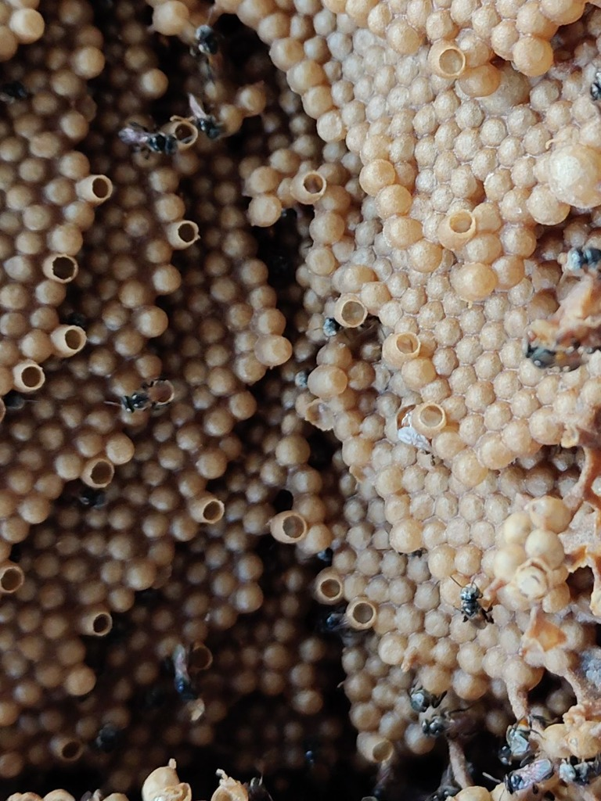
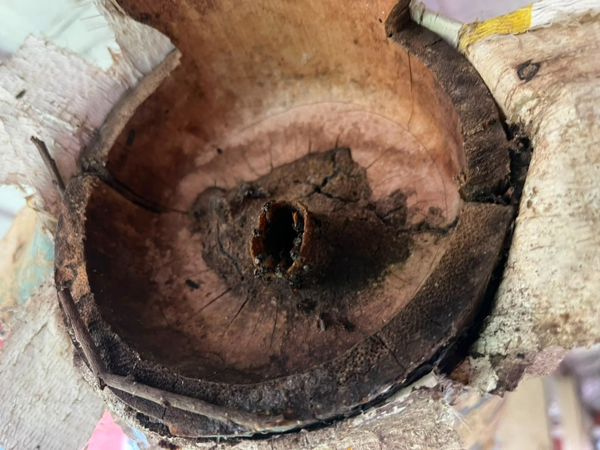

I am Souvik, a passionate Entomologist dedicated to studying insects, their intricate behaviour, and their fundamental role in stabilizing and enhancing modern agricultural ecosystems.
Currently, I am pursuing my postgraduate studies as an M.Sc. Scholar in the Department of Entomology, Central Agricultural University (CAU), College of Agriculture, Imphal, Manipur. My work stands at the intersection of conservation biology and crop enhancement. I study native stingless bees from the remote, species-rich wilds of Northeast India—specifically centering my academic focus on the first biological documentation of the stingless bee species Tetragonula srikantanathi.
Beyond entomological observations, I research stingless bee nesting architectures and their pollination efficacy on commercially vital crops like rapeseed and mustard. My goal is to develop low-cost, sustainable domestication mechanisms (such as custom bamboo hives) that help native farmers maximize crop yields through biological pollination.
When I am not observing colonies in the laboratory or fields, I am an avid reader and writer, exploring the broader impacts of biological sciences, agriculture, and sustainable development.
Currently working on "Bioecology of Stingless Bee Species Tetragonula srikantanathi in Manipur valley conditions"

